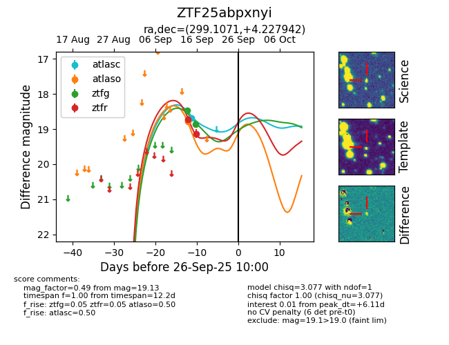
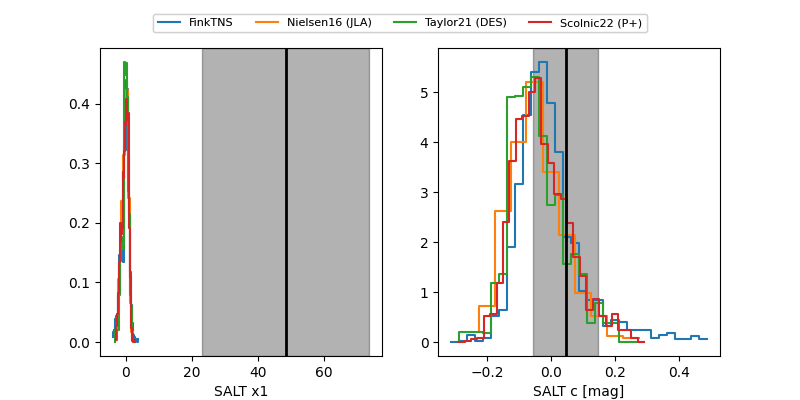

FINK: ZTF25abpxnyi
Lasair: ZTF25abpxnyi
ALeRCE: ZTF25abpxnyi
ZTF25abpxnyi (ztf,fink)
equatorial (ra, dec) = (299.1071,+4.22794)
galactic (l, b) = (44.3199,-12.39875)


last atlasc=18.68, atlaso=18.79, ztfg=18.86, ztfr=19.13
1 atlasc, 1 atlaso, 2 ztfg, 2 ztfr detections